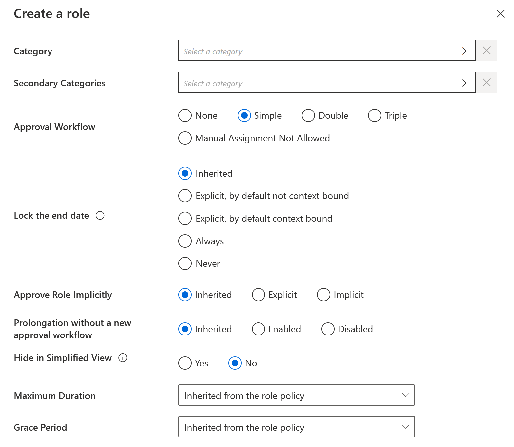
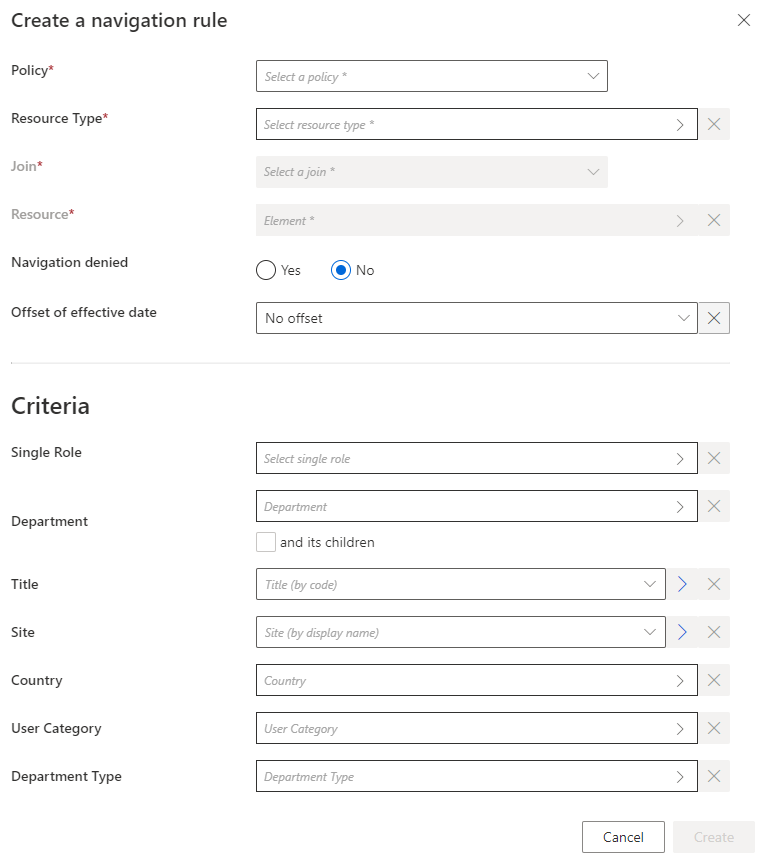
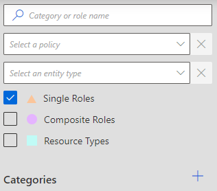
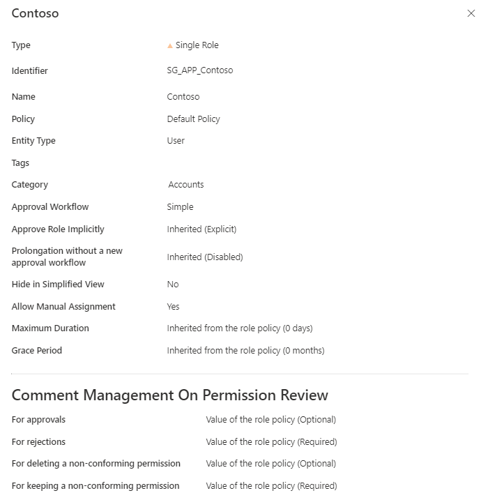
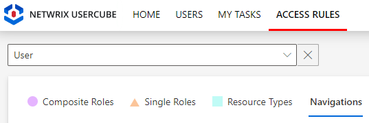
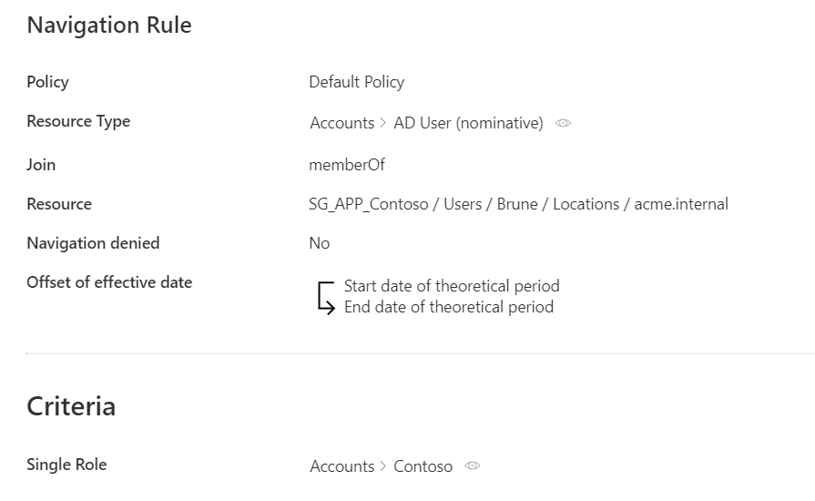

Create a Role Manually
How to create single roles manually.
Overview
A single role is a way to represent an entitlement that is to be assigned to an identity. It brings a layer of abstraction through a user-friendly name, close to the business view. See the Single Role topic for additional information.
To be effective, roles must be linked to actual entitlements in the managed systems. Within Identity Manager, an entitlement assigned to an identity is in fact represented by the value of a given navigation property, in a resource owned by said identity. See the Create an Entity Typetopic for additional information. Thus, each role is linked to one navigation rule per entitlement. See the Resource Type topic for additional information.
NOTE: For example, imagine that we want to grant unlimited Internet access to the administrator profile of an identity. This entitlement won't be assigned directly to the identity but to its AD administration account. In our Active Directory, there is a resource called <DL-INTERNET-Restricted> identified from among AD entries as a group. So we need to add this group membership to the properties of the identity's AD account, using <DL-INTERNET-Restricted> as a value of the memberOf property.
Participants and Artifacts
For a given managed system, integrators may need the help of the application owners who know the application's users, entitlements and data model.
|
Input |
Output |
|---|---|
|
Classification (required) |
Single roles |
See the
Classify Resources
topic for additional information.
Create a Single Role
Create a single role by proceeding as follows:

Step 1 – On the home page in the Configuration section, click on Access Roles to access the roles page.

Step 2 – On the roles page, click on the adequate category and create a role by clicking on + New at the top right corner.
Step 3 – Fill in the fields.
-
Identifier: Must be unique among roles and without any whitespace.
-
Name: Will be displayed in the UI to identify the created single role.
-
Policy: Policy in which the role exists.
-
Entity Type: Entity type targeted by the role.
-
Description: Description of the role.
-
Tags: Label(s) that can later be used to filter the target roles of access certification campaigns. See the Schedule a Certification Campaign topic for additional information.
NOTE: Netwrix recommends using role tags when you want to perform an access certification on a set of roles that are from several categories.
-
Category: Category which is to contain the created role.
-
Secondary Categories: Other potential categories which are to contain the created role.
-
Approval Workflow: Represents the number of validations required to assign the created role.
-
Lock the end date: Locks or binds manual permission assignments to the identity's end date (as defined by the context rule).
It has five options:
-
Inherited:The policy's setting will be used.
-
Explicit, by default not context bound: By default, the assignment's end date will not be context bound in order to encourage the manual entry of an end date.
-
Explicit, by default context bound: By default, the assignment's end date will be context bound and therefore locked, but a manual date can be entered.
-
Never: The assignment's end date will never be locked and needs to be specified manually.
-
Always: The assignment's end date is always locked according to the applicable context rule.
-
-
Approve Role Implicitly: Needs at least the simple approval workflow. Implicit mode bypasses the approval step(s) if the person who makes the role request is also the role officer. Explicit refuses said bypass. Inherited follows the policy decision to approve roles implicitly or not. See the Create a Policy topic for additional information.
-
Prolongation without a new approval workflow
-
Hide in Simplified View: Hides the role from the users' Simplified View in View Permissions dialog. This setting does not apply to roles which are either inferred or have workflow states which require manual action.
-
Maximum Duration: Duration (in minutes) after which the role will be automatically revoked, if no earlier end date is specified.
NOTE: The maximum duration impacts only the roles which are manually assigned after the maximum duration is set. Pre-assigned roles are not impacted.
- If no duration is set on the role, the maximum duration of the associated policy is applied.
- If the duration is set to 0 on the role, it prevents the associated policy from applying its maximum duration to it. -
Grace Period: Duration (in minutes) for which a lost automatic single role is prolonged. A review will be required to validate or decline the entitlement prolongation. Inferred entitlements won't be lost unless the end of the grace period is reached or the prolongation is declined.
NOTE: The grace period is only applied if the loss of the entitlement is due to a change in the rules, i.e. rule deletion or criteria changes.
If the grace period is not defined, the value is inherited from the policy.
Step 4 – Click on Create and see a line added on the roles page.
Step 5 – Create at least one navigation rule with the single role as a criterion.
Once you have completed the steps the single role is created.
Create a Navigation Rule
Navigation rules aim to assign given resources to identities based on specific criteria. A navigation rule sets the value of the navigation property on a specific resource, if a given condition is met. It is linked to a parent resource type that sets the target entity type. One rule creates one navigation.
Create a navigation rule by proceeding as follows:

Step 1 – On the home page in the Configuration section, click on Access Rules to access the rules page.

Step 2 – In the drop down menu at the top left, choose the entity type to which the future navigation rule will be applied.
Step 3 – Click on the Navigations tab and on the addition button at the top right corner.

Step 4 – Fill in the fields.
- Join: Target property whose value is impacted by the created rule.
- Resource: Value to be set on the JOIN.
- Navigation denied: Option that forbids the resource assignment.
- Offset of effective date: Time period that defines the actual effective date according to the value's start and/or end date. An offset of effective date can be useful for some attributes. For example, account activation and deactivation can be managed according to the start and/or end dates.
- Criteria: Conditions that, if met, trigger the created navigation.
Step 5 – Click on Create and see a line added on the rules page.
Once you have completed the steps the navigation rule is created.
Impact of Modifications
When deleting a single role, caution must be used when deleting the corresponding navigation rules. Indeed, these rules thus lose their criteria and may be applied to far too many people after that.
Verify Single Role Creation
In order to verify the process, check that the role and rule are created with the right parameters.
Step 1 – For roles, click on Access Roles on the home page in the Configuration section.

Step 2 – Select single roles and find the role you created inside the right category and with the right parameters.
Our example would look like:

Step 3 – For rules, click on Access Rules on the home page in the Configuration section.

Step 4 – Select navigation rules and find the rule(s) you created with the right parameters.
Our example would look like:

The verification of role creation has been completed.